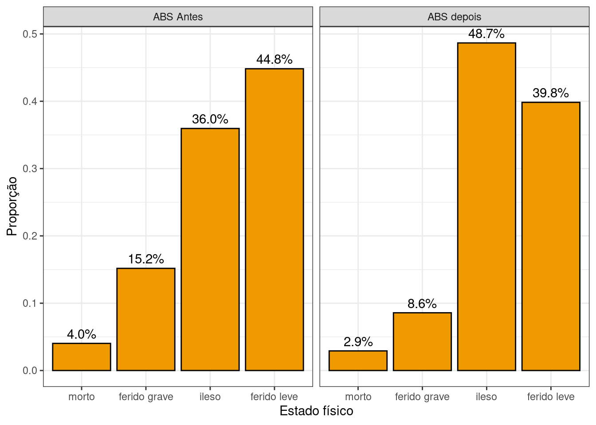
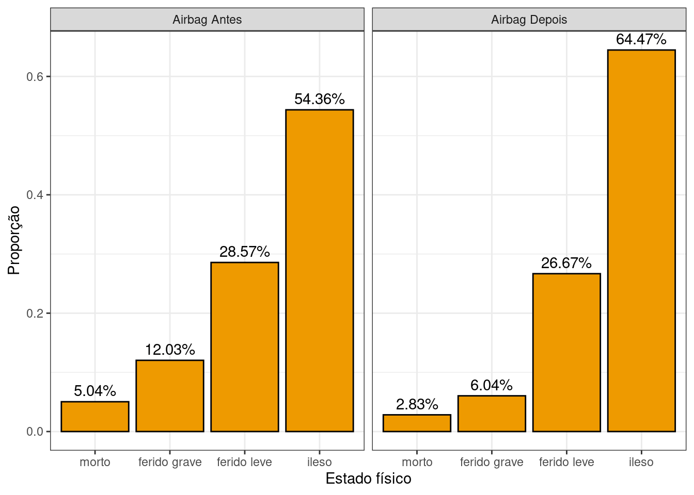
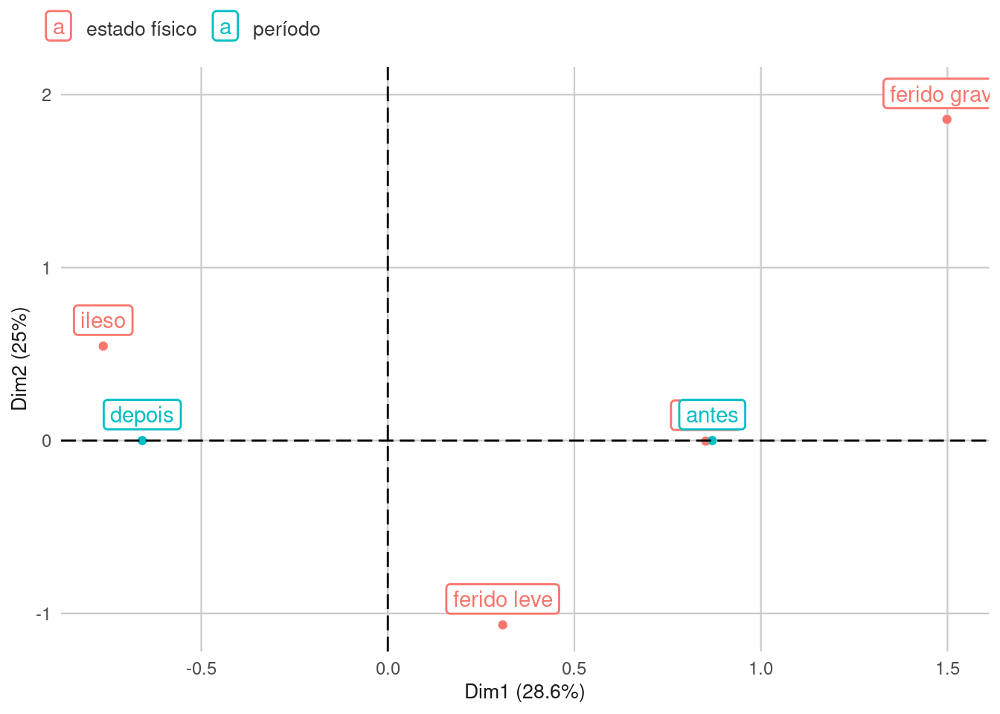
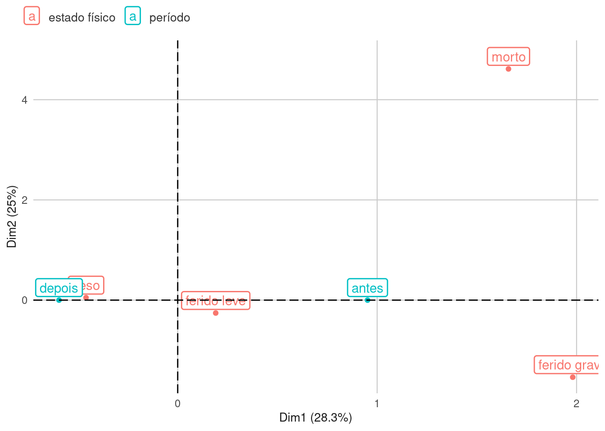

1 Relatório
Segundo o CONTRAN na resolução 311/09 acerca da obrigatoriedade do equipamento suplementar de segurança Air bag na frota total de veículos, assim como a 380/11 que visa estabelecer o mesmo critério de implementação acerca do ABS, determina que até o ano de 2014 todos veículos novos (que tenham ao menos quatro rodas) produzidos nacionalmente ou importados devem possuir tais equipamentos de segurança.
Pautando-se no período de início da implementação até à frota total de veículos da categoria mencionada, os dados de sinistros em análise e suas especificidades foram extraídos da Base de Dados da PRF (Polícia Rodoviária Federal) e selecionados os anos de 2007 e 2008 para o estudo do período que antecede à obrigatoriedade, e 2014 à 2023 (selecionando apenas veículos com ano de fabricação superior a 2014) para análise da efetividade de ambos equipamentos de segurança após a implementação total em 2014. Dados pertencentes aos anos anteriores aos que foram estabelecidos como período inicial não foram utilizados pelas inconsistências nos registros feitos pela PRF.
O objetivo deste documento é avaliar o impacto da obrigatoriedade do Airbag e ABS na severidade dos sinistros de trânsito. A pesquisa utilizou dados de sinistros nas rodovias federais brasileiras disponibilizados pela da Polícia Rodoviária Federal.
2 Metodologia
Nesta seção será apresentado as especificações que foram pré-estabelecidas na base de dados, de forma que se tenha um menor erro possível relativo as generalizações. Além de apresentar os conceitos estatísticos que serão utilizados no decorrer do trabalho.
A partir da base de dados da PRF, foi gerado duas bases de dados idênticas (cópias da base original), sendo a base de dados para avaliar o impacto do Airbag e a segunda para avaliar o impacto do ABS. Essa partição fez-se necessária para que sejam realizados filtros diferentes e únicos em cada uma.
2.1 Seleção dos tipos de veículos
A base de dados fornecida pela PRF é relativa às vítimas dos sinistros de trânsito ocorridos em rodovias federais, onde cada observação representa uma vítima do sinistro. Portando há diversas categorias de veículos, como por exemplo: charrete, carro de mão, bicicleta, entre outros.
Para que seja avaliado a implementação do uso de Air bag e ABS foram filtrados ambas as base de dados de forma a conter apenas os sinistros relativos a automóveis e utilitários, possibilitando uma base de comparação mais uniforme, tendo em vista que o porte do veículo é capaz de impactar na severidade do sinistro.
2.2 Seleção do período de análise
Visando retirar da análise o período de transição da obrigatoriedade do airbag e ABS e obter períodos antes e depois da obrigatoriedade bem definidos, foram utilizados os dados de sinistros dos anos de 2007 e 2008 como período “antes” da obrigatoriedade e dados de 2014 a 2023 como período “depois” da mesma.
2.3 Seleção do ano de fabricação
Como estes dados são atribuídos pelos agentes da PRF, existe o fator de erro humano que ocasionou em valores discrepantes. Portando para as base de dados relativas aos anos 2007 e 2008, foi considerado que o ano de fabricação do veículo fosse entre 1946 e 2008.
Para os dados dos anos de 2014 a 2023 foi considerado que o ano de fabricação fosse superior ao ano de 2014, de forma a garantir que estes possuam o Air bag e o ABS devido as resolução estabelecidas pelo CONTRAN.
2.4 Seleção dos tipos de sinistros
Como a resolução 311/09 previa a obrigatoriedade do Air bag sendo instalados na posição frontal do veículo, foi considerado para a base de dados do Air bag apenas sinistros que ocorreram colisão com objeto, colisaõ frontal, colisão traseira ou engavetamentos. Já para a base de dados do ABS foi considerado todos os tipos de sinistros.
2.5 Seleção dos ocupantes
Para a base do ABS foi considerado todos os ocupantes, enquanto para a base de dados do Air bag foi considerado apenas os condutores para se avaliar o impacto.
2.6 Seleção do estado físico das vítimas
Foi necessário realizar esse filtro, pois antes de 2014 a PRF realiza o registro de todos os sinistros, independente da severidade do mesmo, mas a partir deste ano foi implantado o e-DAT (Declaração de Acidentes de Trânsito) que, em sinistros sem vítimas, quem deve realizar o registro destes sinistros são os próprios envolvidos, de modo que a partir deste ano a PRF não realizava mais o registro do boletim de ocorrência convencional (LPAT) no local do sinistro sem vítima.
Portanto foi filtrado, em ambas as bases, que em todos os casos que houvessem vítimas ilesas teriam que estar classificados como sinistros com vítimas, para evitar essa incongruência entre os anos de 2007 e 2008 com os anos de 2014 à 2023.
2.7 Análises estatísticas
Para este trabalho foi utilizado o teste Qui-Quadrado e foi feito a Análise de Correspondência (ANACOR). O teste Qui-Quadro é um teste de hipóteses que tem por finalidade avaliar a associação entre variáveis categóricas, onde seu resultado será apresentado por um p-valor que, dependendo deste, será rejeitado ou não rejeitado (a hipótese nula é que as variáveis não possuem associação entre si), enquanto a ANACOR é uma análise que se baseia na tabela de contingência para criar um gráfico, onde seja possível visualizar tais associações entre as variáveis categóricas.
3 Resultados
Nessa seção será apresentado os resultados deste estudo, sendo: a proporção do estado da vítima comparando com o período antes e depois, tanto do ABS quanto Air bag; os testes qui-quadrado para verificar se existe a associação entre as variáveis; e a análise de correspondência para obter uma visualização gráfica dessa associação.
3.1 Proporção dos Estado Físico da Vítima
Para avaliar a proporção do estado físico da vítima antes e depois da obrigatoriedade, foram feitos dois gŕaficos de barras relativos a porcentagem para demonstrar tal aumento ou diminuição dos casos. O gráfico abaixo (Figura 3.1) apresenta a proporção do estado físico da vítima, mostrando os percentuais antes e depois da obrigatoriedade do ABS.
Fonte: Os autores (2024)
Com base no gráfico acima foi possível verificar que:
- A proporção de “morto” diminuiu 1.1%;
- A proporção de “ferido grave” diminuiu 6.6%;
- A proporção de “ferido leve” diminuiu 5%;
- A proporção de “ileso” aumentou 12.7%.
Já o gráfico abaixo (Figura 3.2) apresenta a proporção para a base relativa ao Air bag.

Fonte: Os autores (2024)
Neste gráfico, ficou nítido que a proporção do estado físico “morto” diminuiu 2.21%, o “ferido grave” diminuiu 5.99%, e o “ferido leve” diminuiu 1.9%, enquanto apenas o estado físico “ileso” teve um aumento de 10.11%. Esse aumento na proporção dos “ilesos” na base do ABS e do Air bag significa que houve uma redução na severidade dos sinistros de trânsito.
3.2 Teste Qui-Quadrado
O teste Qui-Quadrado é um teste de hipóteses que tem por finalidade verificar a associação entre variáveis categóricas, as suas hipóteses serão apresentadas abaixo:
\[
Hipótese\ nula\ (H_0) = Não\ há\ associação\ entre\ os\ grupos
\] \[
Hipótese\ alternativa\ (H_1) = Os\ grupos\ estão\ associados
\]
A partir dessas hipóteses, deve-se definir um nível de significância para que então se aceite ou rejeite a hipótese nula a depender do p-valor gerado. Neste estudo verificaremos a associação entre a variável “estado físico da vítima” e a variável “período antes ou depois da obrigatoriedade” e utilizaremos um nível de significância de 0.05, ou seja, a probabilidade de que um resultado estatisticamente significativo ocorra por mero acaso é de 5%. Para realizar esse teste foi utilizado a função chisq.test() no R. Antes de realizar o teste Qui-Quadrado é necessário gerar a tabela de contingência entre as duas variáveis a serem analisadas. O resultado do teste para o ABS é apresentado abaixo:
Pearson's Chi-squared test
data: tab_abs
X-squared = 5338.7, df = 3, p-value < 2.2e-16
Como o p-valor resultou em menor que 2.2-16 (muito próximo de zero) iremos rejeitar a hipótese nula e afirmar que as variáveis possuem associação estatisticamente comprovada, isto é, o estado físico que a vítima se encontra após o sinistro possui uma associação com o período de tempo antes e depois da obrigatoriedade da implantação do ABS.
Para a base de Air bag o resultado será apresentado abaixo:
Pearson's Chi-squared test
data: tab_airbag
X-squared = 1174.4, df = 3, p-value < 2.2e-16
O p-valor deste teste também resultou próximo de zero (2.2-16), demonstrando que ambas as bases possuem associação entre as variáveis “estado físico” e “período”.
3.3 Análise de Correspondência
A análise de Correspondência irá facilitar a visualização da associação que foi provada na seção anterior. Essa análise também se baseia na tabela de contingência e permite a elaboração do mapa perceptual, em que as categorias das variáveis são plotadas segundo duas dimensões. Aquelas categorias mais próximas umas das outras representam um maior nível de associação.
O mapa perceptual das variáveis “estado físico” e “período” para a base de dados ABS está apresentado abaixo:

Fonte: Os autores (2024)
Pelo gráfico da Figura 3.3 ficou nítido que as classificações “ileso” e “depois” estão mais associadas, além das classificações “morto” e “antes” que estão altamente associadas (classificação “antes” sobrepôs a classificação “morto”), enquanto as categorias “ferido grave” e “ferido leve” estão menos associadas ao período em relação as outras.
O gráfico da Figura 3.4 relativo ao mapa perceptual para a base de dados do Air bag será apresentado abaixo:

Fonte: Os autores (2024)
Nele há também a associação clara entre as categorias “depois” e “ileso”, enquanto as categorias “ferido grave” e “morto” estão mais próximas do “antes”; já a classificação “ferido leve” se encontra entre os dois períodos.
4 Conclusão
Como conclusão, tem-se que a partir dos testes e análises estatísticas foram possíveis verificar que:
- Após a obrigatoriedade do ABS e do Air bag houve uma redução na proporção dos sinistros com vítimas feridas leves, grave ou mortas, enquanto houve um aumento na proporção das vítimas ilesas;
- Foi comprovado estatísticamente a partir do teste Qui-Quadrado que as variáveis “estado físico” e “período antes e depois da obrigatoriedade” possuem uma associação significativa entre si;
- Há uma maior associação entre as categorias “ilesos” e “depois”, enquanto a classificação “depois” permanece mais próximo de “ferido grave” e “morto”.
Vale ressaltar que estas associações foram feitos considerando o período “antes” e “depois” da obrigatoriedade do ABS e Air bag, mas que não são os únicos fatores que contribuiram para este resultado. Há diversas outras medidas que influenciaram nessa diminuição da severidade dos sinistros e na associação entre as variáveis, como por exemplo uma melhora na infraestrutura viária. Mas de fato a implementação do ABS e do Air bag são um dos fatores primordiais para estes valores estatísticos.